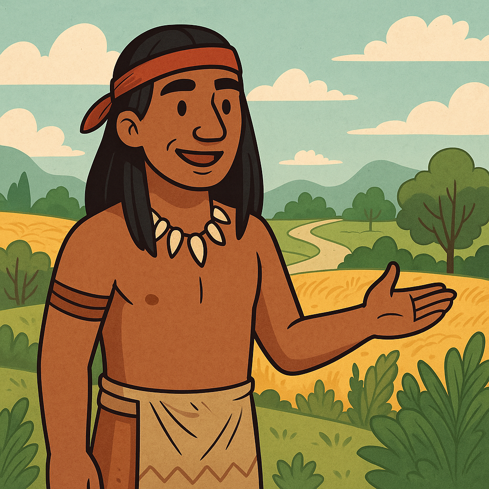
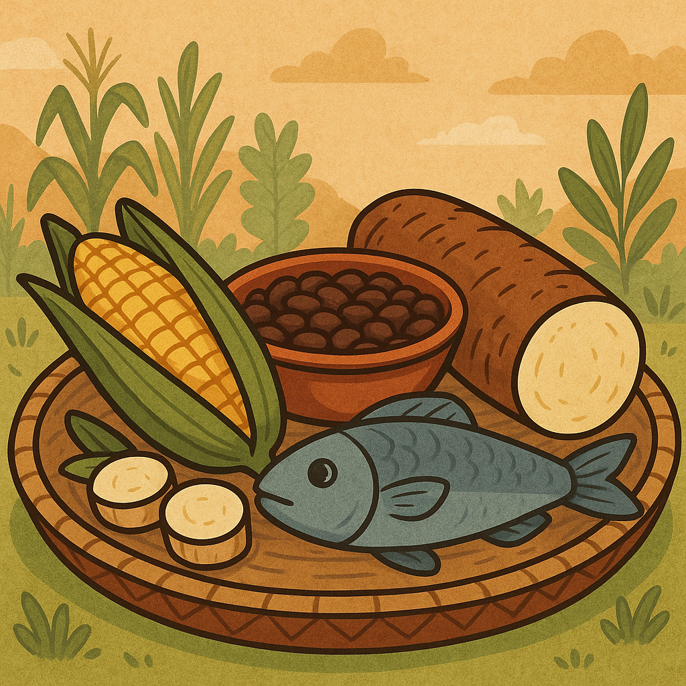
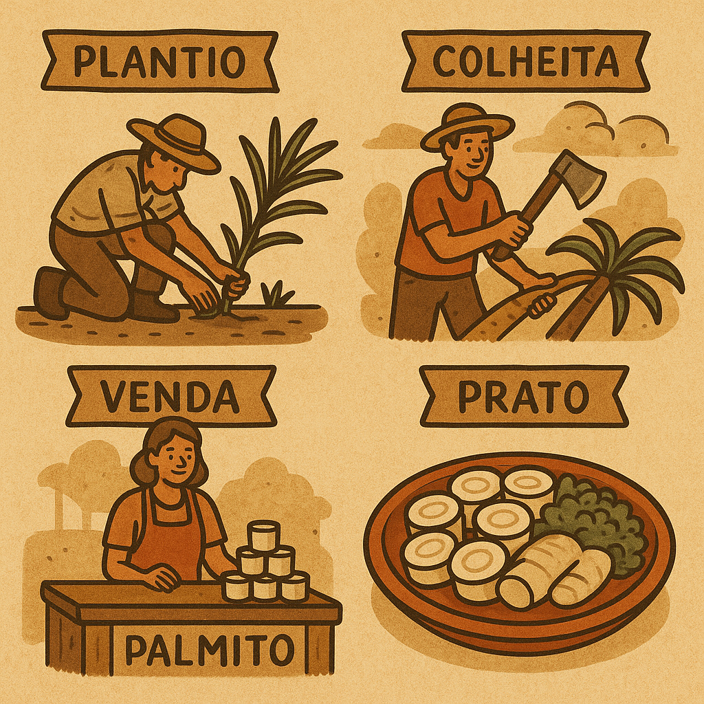

Olá, sou um Tupi-Guarani e venho contar a história do alimento em minha terra
Eu sou um dos muitos indígenas que habitam essa terra rica em história e cultura...

Eu sou um dos muitos indígenas que habitam essa terra rica em história e cultura...
Nas nossas terras, o milho, o feijão, a mandioca...
Os povos africanos também contribuíram muito...
Com a chegada dos portugueses...

Agora que a comida foi cultivada...
Nosso prato típico? O barreado!